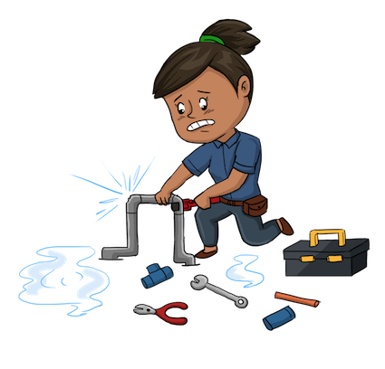

<div class="container theme-showcase" role="main">

  <div class="jumbotron">
    
    <h1>plumber</h1>
    <p>An R package that converts your existing R code to a web API using a handful of special one-line comments.</p>
    <div class="clearfix"></div>
  </div>

{% capture intro %}{% include intro.md %}{% endcapture %}
{{ intro | markdownify }}

</div>
